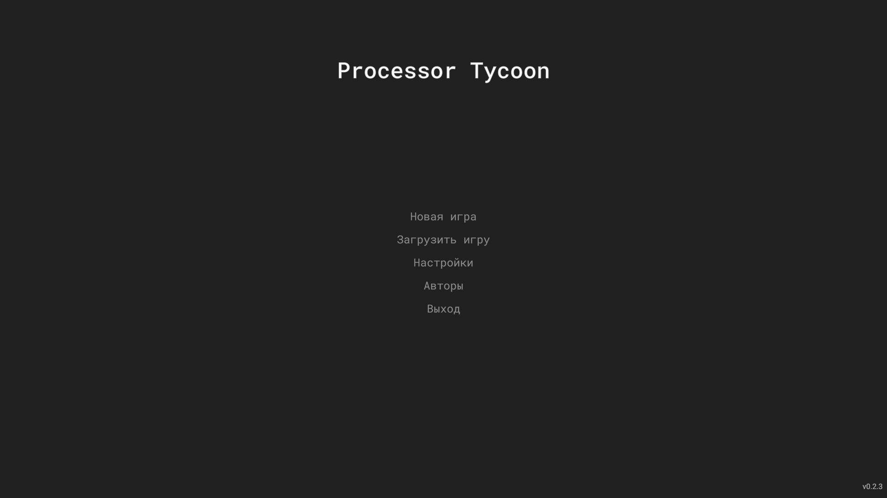

Интерфейс на русском
Меню, кнопки, подсказки и игровые тексты. Динамические сообщения переводятся по шаблонам.
РУССКАЯ ЛОКАЛИЗАЦИЯ / 0.2.3
Создавайте процессоры.
Разбирайтесь в деталях — на родном языке.
Русский интерфейс для вашей процессорной империи. Меню, подсказки и игровые тексты — в одном простом установщике.
Ссылка появится после настройки репозитория в config.js или публикации на GitHub Pages.

переведено на русский
для динамических текстов
установка и удаление офлайн
Windows, 64 бита
01 / О ПЕРЕВОДЕ
Меньше времени на перевод.
Больше — на следующий процессор.
Меню, кнопки, подсказки и игровые тексты. Динамические сообщения переводятся по шаблонам.
Технические названия и обозначения сохранены: привычные термины остаются узнаваемыми.
Один EXE устанавливает и удаляет перевод. BepInEx включён в комплект, интернет для установки не нужен.
В версии 1.3.0 исправлены показанные проблемы с текстом; пользователь подтвердил результат в тестовой сборке. Полное прохождение и все поздние события отдельно не проверялись. История изменений.
02 / УСТАНОВКА
Нужна установленная Processor Tycoon 0.2.3
для Windows x64.
Загрузите ProcessorTycoon-Russian-Setup.exe из последнего релиза. Все компоненты уже внутри.
Закройте игру, запустите EXE и выберите папку, в которой находится Processor Tycoon. Выполните установку.
Откройте Processor Tycoon привычным способом. Главное меню встретит вас на русском языке.
03 / ВОПРОСЫ
Самое важное
о совместимости и установке.
Русификатор рассчитан на Processor Tycoon 0.2.3 для Windows x64. Совместимость с другими версиями не подтверждена.
Закройте игру, снова запустите тот же EXE и выберите удаление русификатора. Сохраните установщик, чтобы он был под рукой для отката.
Нет. BepInEx включён в установщик. Дополнительно скачивать его для этой установки не требуется.
В комплекте 736 переводов и 120 шаблонов для динамических текстов. Полное прохождение и все поздние события не проверялись. Технические названия и обозначения намеренно сохранены.
Нет. Это независимая любительская локализация. Проект не связан с разработчиками Processor Tycoon и не является официальным продуктом.